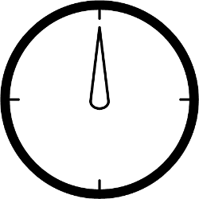
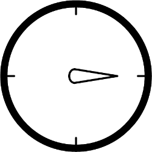
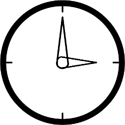

Fusion is second step of binocular vision. It's process of merging two images from eyes to one image proceeded in brain.
To test fusion very similar images are presented for left and right eye. Images differ each other with small details. If patient can't see this details, he/she don't have ability to fusion.
Program includes 5 test checking fusion. They consists of 2 very similar elements presented for different eyes:
Exemplary on picture 1 there is element visible for one eye and on picture 2 - visible for second eye. Pacient with ability to fusion should perceive image similar to image 3.
Patient can correct his phoria by moving one of elements in whichever direction.
Phoria is calculated from following equation on the basics of movement suitable element x and distance from monitor l.


